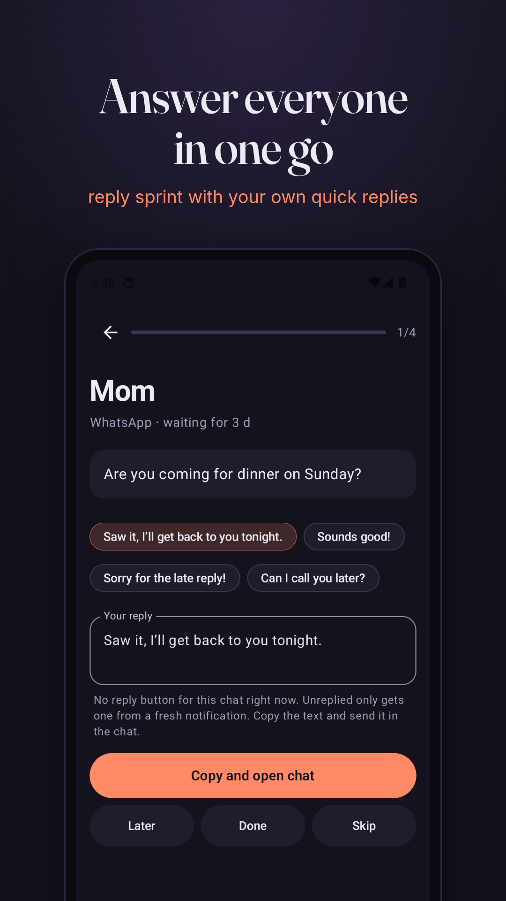
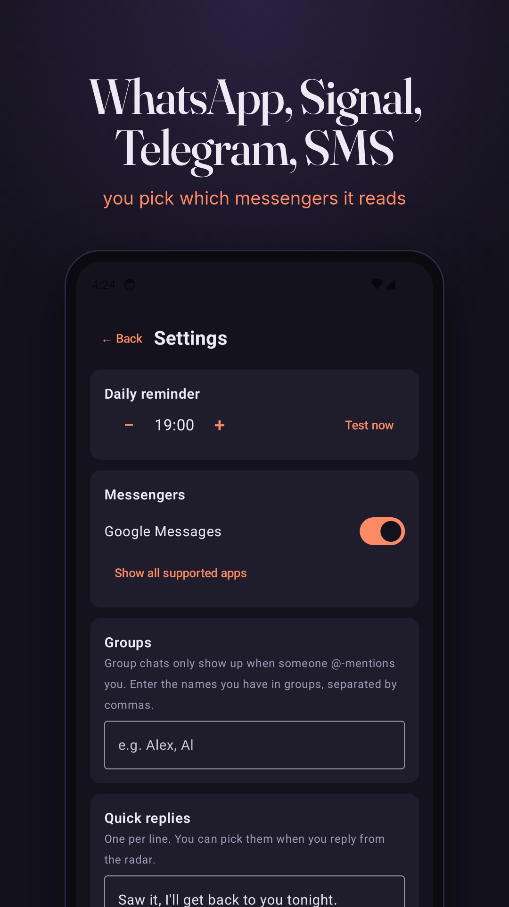

The ADHD texting app that reminds you to text back
You open a chat, answer in your head, and never send it. Your messenger stops showing the chat as unread the moment you open it. Unreplied notices exactly that moment and keeps a short list of who is waiting for your reply, and for how long.
Free Android app · WhatsApp, Signal, Telegram, Threema, SMS · no internet permission · no account · English and German · built for people with ADHD
Download APK Source code on GitHub


How it works
| You open a chat, tap or swipe the notification | The chat moves to Wartet auf dich (waiting for you) |
| You reply from the notification | Marked done automatically |
| You reply inside the messenger | Swipe left: done |
| Not now | Swipe right: back in 3 hours, or tonight, or tomorrow morning |
| Several people waiting | Reply sprint: one at a time, with your quick replies |
| A favorite you haven't written to in weeks | Shows up under "Haven't written in a while" |
| Group chats | Only when someone @-mentions you |
| Once a day, at your hour | One reminder: "3 Leute warten auf dich" |
Nothing to type in
A to-do app only helps if you type the reminder in, right when your head is already somewhere else. Unreplied fills the list on its own from the notifications Android already shows you.
Privacy
- No internet permission: the app cannot send anything anywhere.
- Reads only the messengers you switch on, skips every other app.
- Keeps name, times and the first 80 characters per chat, in private app storage, excluded from backups.
- Open source under GPL-3.0.
Questions
How do I remember to text people back?
Unreplied keeps the list for you. It notices when you open a chat on WhatsApp, Signal, Telegram or SMS and don't reply, and shows everyone who is waiting, oldest first. Once a day it sends one reminder, never one per message.
Is there an app for unanswered WhatsApp messages?
Yes. Unreplied is a free Android app that tracks WhatsApp chats you read but didn't answer. WhatsApp itself only marks chats unread until you open them.
Does Unreplied read my messages or upload them?
It reads the notifications of the messengers you switch on and keeps the name, the times and the first 80 characters of the last message on your phone. The app has no internet permission, so it cannot send anything anywhere.
Why is texting back so hard with ADHD?
Many people with ADHD read a message, plan the answer in their head and get pulled away before sending it. Once the chat is opened, the unread badge is gone and the reminder with it. Unreplied brings that reminder back.
Is there an iPhone version?
No. Unreplied needs Android's notification access, which iOS doesn't offer to apps.
Auf Deutsch
Unreplied (früher Antwort-Radar) ist eine WhatsApp-Erinnerung für unbeantwortete Nachrichten. Du liest eine Nachricht, antwortest im Kopf und schickst nie ab. Unreplied merkt, wenn du einen Chat öffnest und nicht antwortest, und zeigt dir, wer seit wann auf dich wartet. Mit Antwort-Sprint, Textbausteinen, „Später“ und einer Sammelmeldung am Tag. Für WhatsApp, Signal, Telegram, Threema und SMS. Kostenlos, ohne Internet-Berechtigung, Open Source.
APK herunterladen